wmtask_direct_sum_additive_splitmode_p30_perareaautodim__lc_x_obsnoisescale_sweepProject: WMTask_identity_encoder_verification
Launched: 2026-04-24T04:15:42Z
Completed: 2026-04-24T13:25:27Z
Outcome: complete_clean
Git: latent-JacobianODE @ 71e9038
Expected runs: 21
wmtask_direct_sum_additive_splitmode_p30_perareaautodim__lc_x_obsnoisescale_sweepDescription
WMTask fully-observed (N1=N2=64), latent JacobianODE with DirectSum coupling encoder. Each area's n_target_dims is auto-picked at data load time as the smallest k such that area i's first k PCs capture
= 0.99 of its variance — visual and cognitive get independent n_target_dims per block, leaving the rest as a per-area null subspace. 21-run sweep over 7 LC × 3 obs_noise_scale.
Hypothesis
Companion to the full-128 (no-null) sweep. The per-area null subspace provides loop-closure pressure to actually do something structural — at full 128 LC has nothing meaningful to clamp because z_dyn is the entire latent (and the null is empty). Auto-picking per-area dim by 0.99 variance threshold should give a smaller z_dyn (~maybe 30-50 dims per area, depending on RNN structure) that the dynamics MLP can learn more cleanly.
Whether this improves Lyapunov / Gramian fidelity vs the full-128 case is the question. If yes, the null subspace + LC pressure is doing useful regularization. If no, the dynamics MLP is the bottleneck and dim reduction doesn't help.
Success criteria
Swept axes (2): training.lightning.loop_closure_weight, training.lightning.obs_noise_scale
Chosen run (by best_traj_loss): a8o57g8p — traj_loss=0.03232, MASE=0.8166, R²=0.9634, LC loss=62.735, epoch=42.0
Swept-axis values at chosen run: training.lightning.loop_closure_weight=1.0e-06 · training.lightning.obs_noise_scale=0.05
Runs analyzed: 21 (expected 21)
| run_idx | run_id | training.lightning.loop_closure_weight |
training.lightning.obs_noise_scale |
best_traj_loss | best_MASE | R² | LC loss | epoch |
|---|---|---|---|---|---|---|---|---|
| 5 | a8o57g8p |
1.0e-06 | 0.05 | 0.03232 | 0.8166 | 0.9634 | 62.735 | 42.0 |
| 8 | iu71o3mp |
1.0e-05 | 0.05 | 0.03240 | 0.8215 | 0.9633 | 22.887 | 42.0 |
| 2 | r9mia371 |
0 | 0.05 | 0.03244 | 0.8257 | 0.9633 | 87.404 | 38.0 |
| 12 | wo94ytuq |
0.001 | 0 | 0.03255 | 0.8300 | 0.9632 | 0.226 | 42.0 |
| 7 | 612x132u |
1.0e-05 | 0.01 | 0.03260 | 0.8344 | 0.9631 | 15.105 | 38.0 |
| 11 | oji3a016 |
1.0e-04 | 0.05 | 0.03262 | 0.8364 | 0.9631 | 3.509 | 35.0 |
| 10 | r3rlcdnf |
1.0e-04 | 0.01 | 0.03285 | 0.8499 | 0.9628 | 3.036 | 38.0 |
| 0 | t01qbk5m |
0 | 0 | 0.03295 | 0.8548 | 0.9627 | 18.908 | 27.0 |
| 3 | nrpapydb |
1.0e-06 | 0 | 0.03295 | 0.8550 | 0.9627 | 12.513 | 27.0 |
| 6 | g0l7sjg7 |
1.0e-05 | 0 | 0.03296 | 0.8547 | 0.9627 | 4.944 | 27.0 |
| 9 | 76h7kfc6 |
1.0e-04 | 0 | 0.03307 | 0.8619 | 0.9626 | 1.071 | 27.0 |
| 1 | l0i0bzym |
0 | 0.01 | 0.03351 | 0.8920 | 0.9621 | 53.114 | 27.0 |
| 14 | 61sz5up4 |
0.001 | 0.05 | 0.03364 | 0.8988 | 0.9619 | 0.895 | 41.0 |
| 15 | 8eiesjh9 |
0.01 | 0 | 0.03392 | 0.9097 | 0.9616 | 0.022 | 34.0 |
| 13 | bmlme6f2 |
0.001 | 0.01 | 0.03413 | 0.9253 | 0.9614 | 0.693 | 38.0 |
| 4 | g5airzvy |
1.0e-06 | 0.01 | 0.03419 | 0.9296 | 0.9613 | 31.632 | 24.0 |
| 18 | 1hd13kml |
0.1 | 0 | 0.03427 | 0.9340 | 0.9612 | 0.004 | 42.0 |
| 19 | yihsue9g |
0.1 | 0.01 | 0.03839 | 1.1388 | 0.9565 | 0.016 | 41.0 |
| 20 | tgw80il5 |
0.1 | 0.05 | 0.13790 | 2.8429 | 0.8426 | 0.003 | 7.0 |
| 17 | 33amdeul |
0.01 | 0.05 | 0.27902 | 4.3773 | 0.6796 | 0.152 | 1.0 |
| 16 | wzabanh5 |
0.01 | 0.01 | 0.28017 | 4.3882 | 0.6785 | 0.089 | 1.0 |
obs_noise_scale| obs_noise_scale | Best LC weight | Best traj loss | MASE at best | R² | LC loss | epoch |
|---|---|---|---|---|---|---|
| 0.0 | 1.0e-03 | 0.03255 | 0.8300 | 0.9632 | 0.226 | 42.0 |
| 0.01 | 1.0e-05 | 0.03260 | 0.8344 | 0.9631 | 15.105 | 38.0 |
| 0.05 | 1.0e-06 | 0.03232 | 0.8166 | 0.9634 | 62.735 | 42.0 |
| Criterion | Verdict | Note |
|---|---|---|
| All 21 runs train without divergence | Unknown | |
| Per-area n_target_dims log lines match the inferred RNN structure (some dim reduction expected) | Unknown | |
| Best val traj_loss within 2x of the full-128 companion sweep's best | Unknown | |
| Cross-area Gramian asymmetry consistent with ground truth at the best cell | Unknown | |
| Loop closure loss at best cell < sqrt(n_target_dims) (passes C2) | Unknown |
Automated verdicts use simple numeric-threshold parsing and may mis-classify qualitative criteria. The Discussion section below takes precedence.
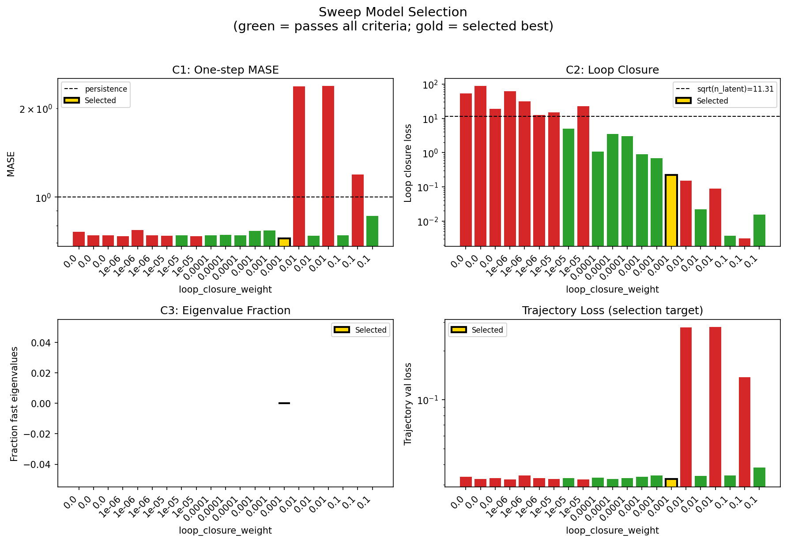
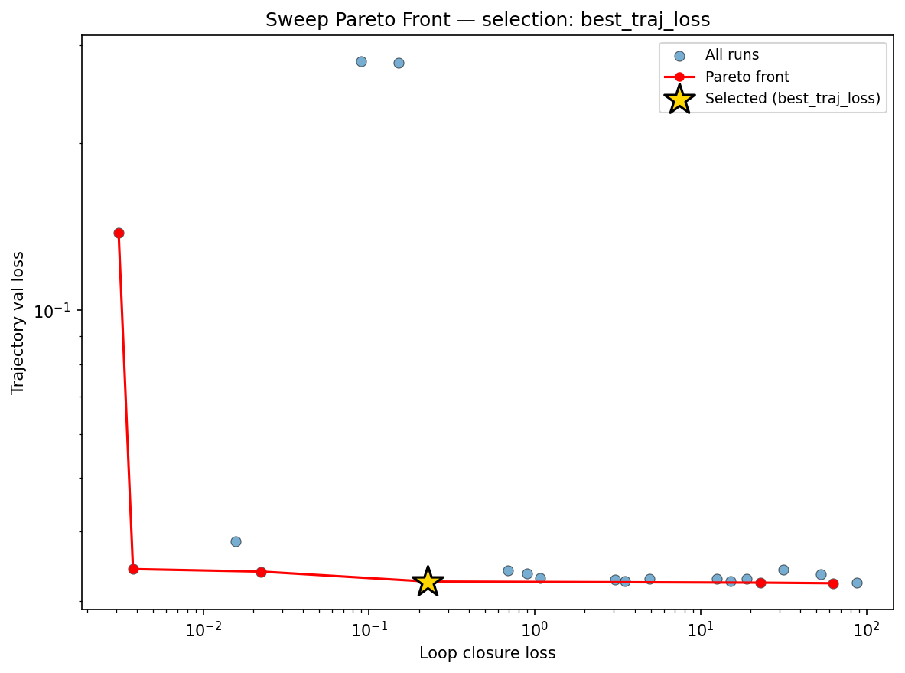
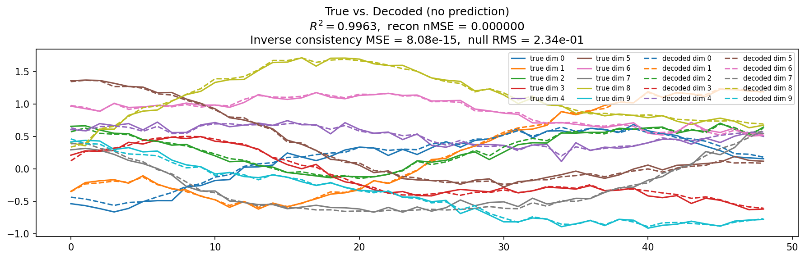
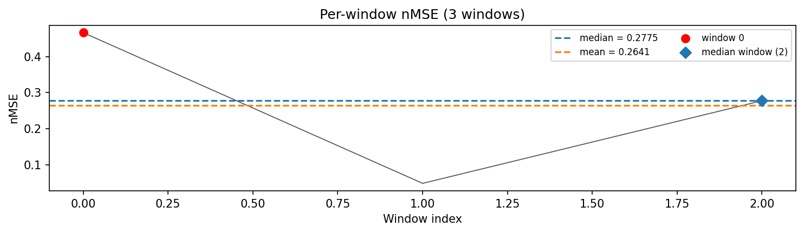
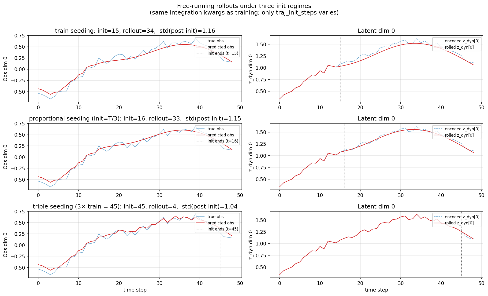
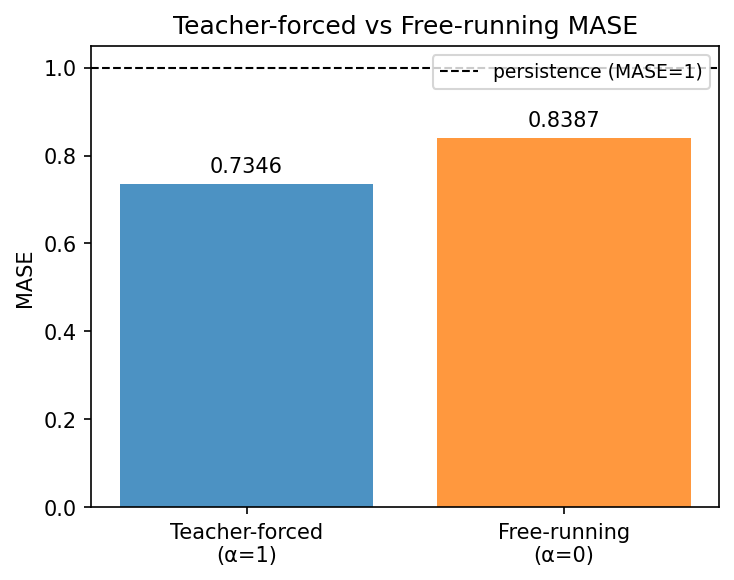
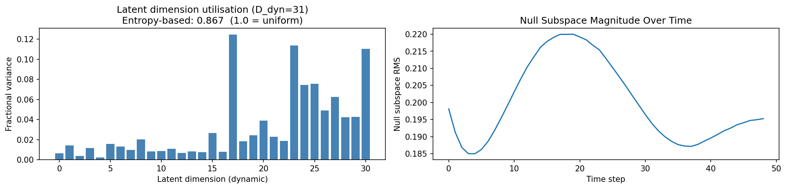
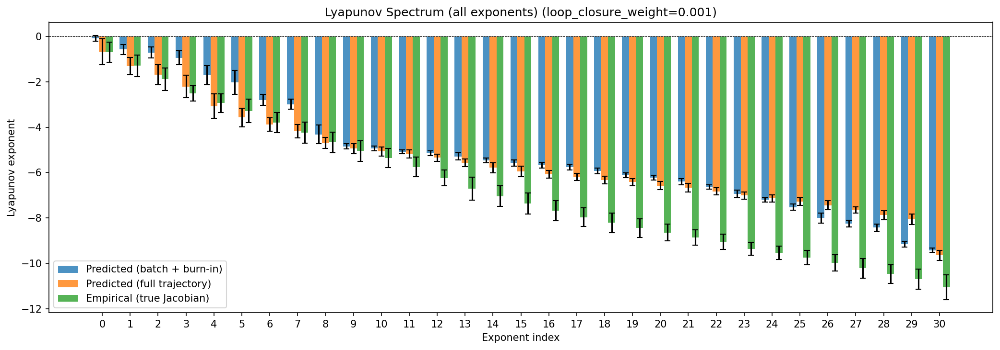
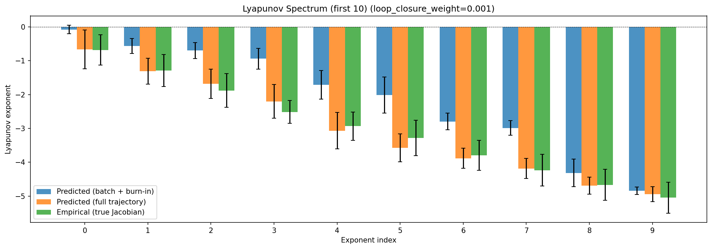
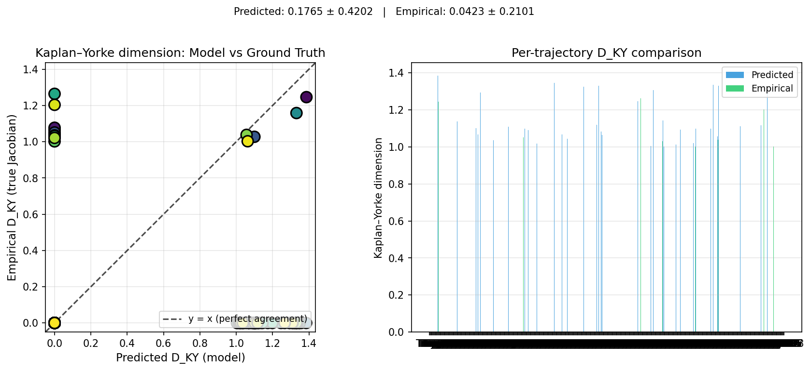
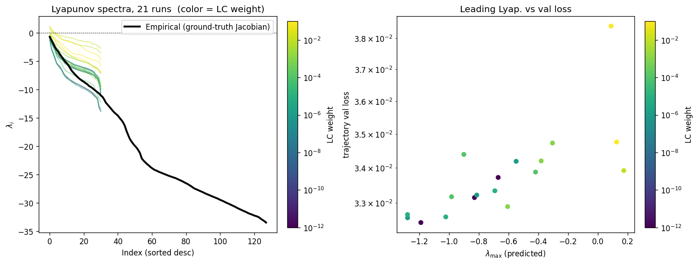
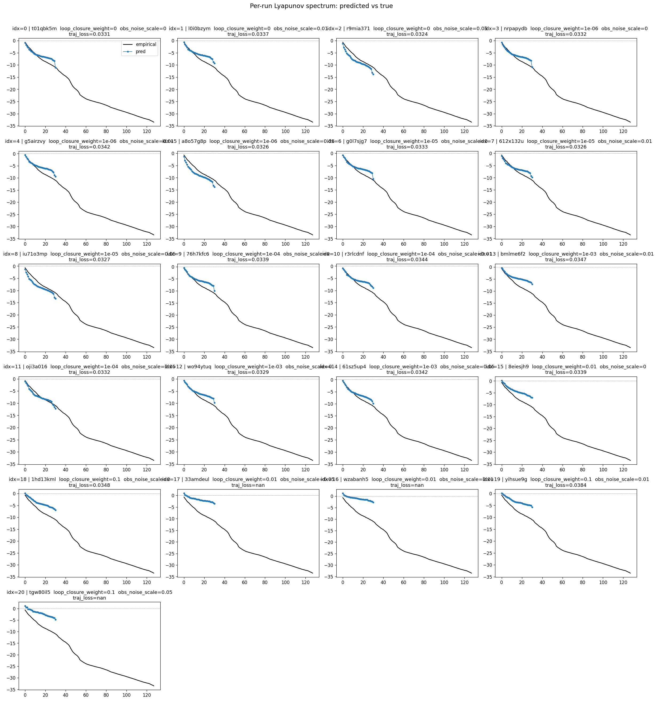
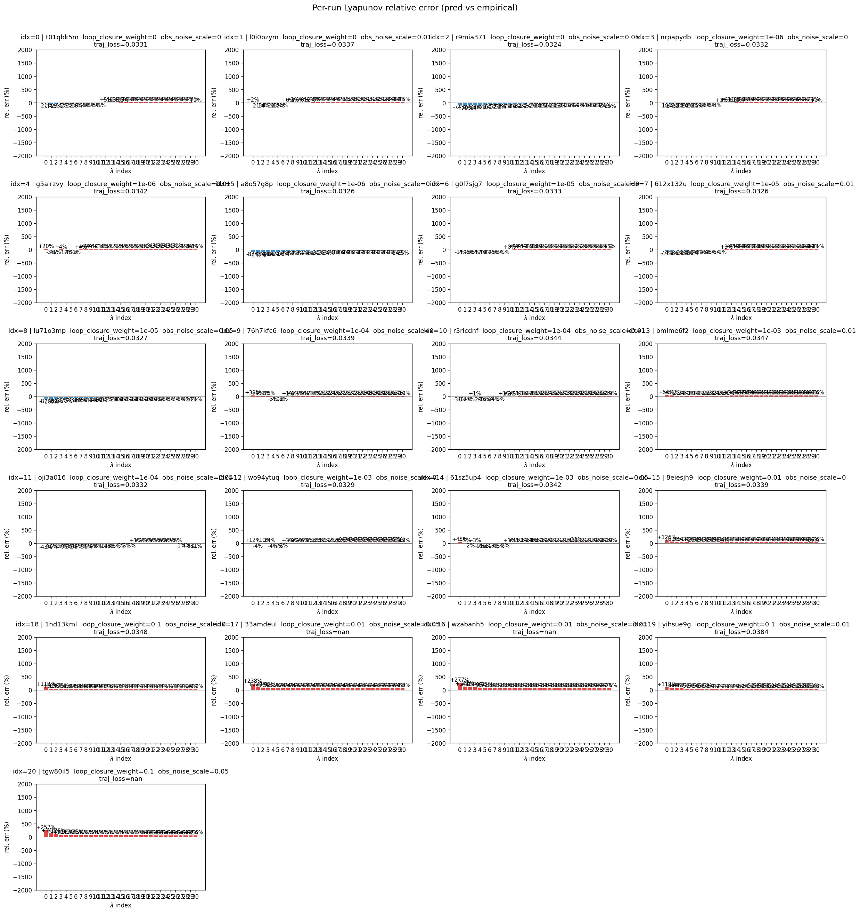
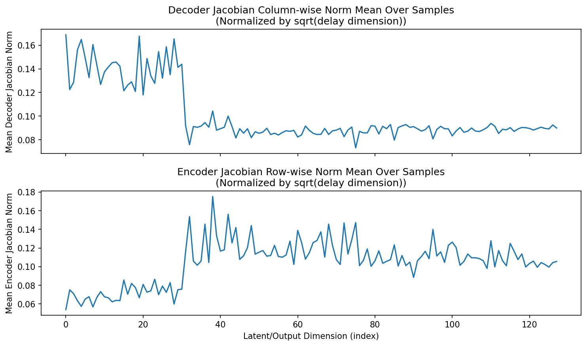
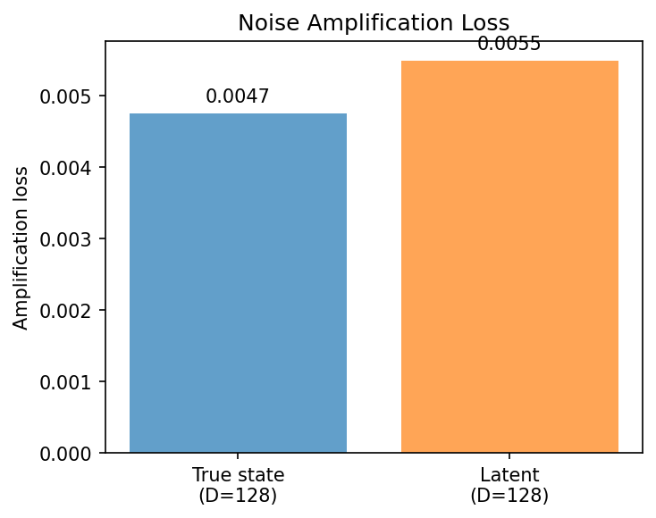
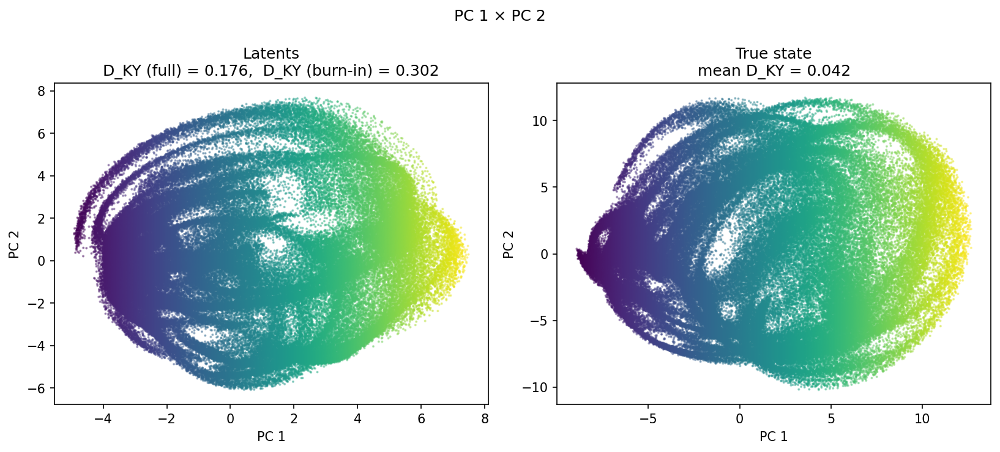
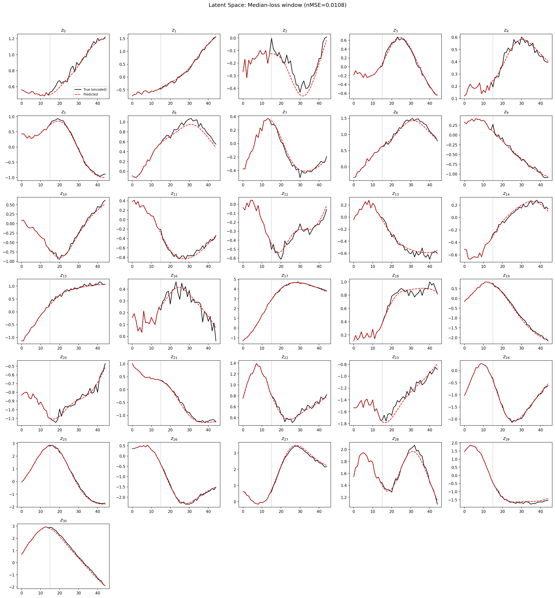
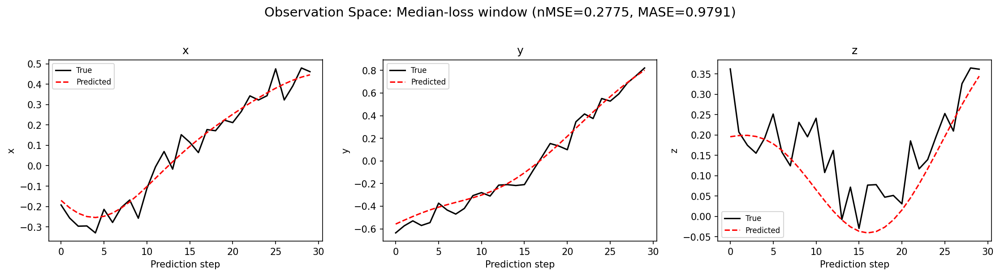
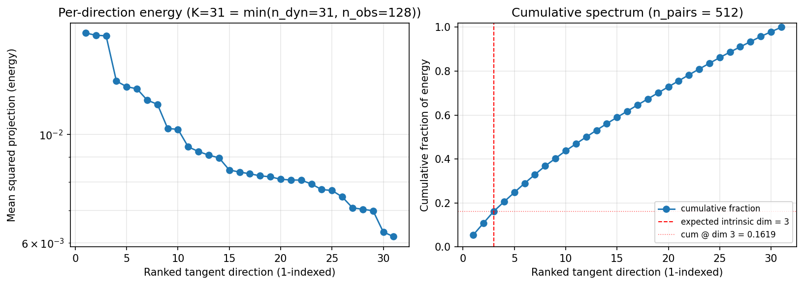
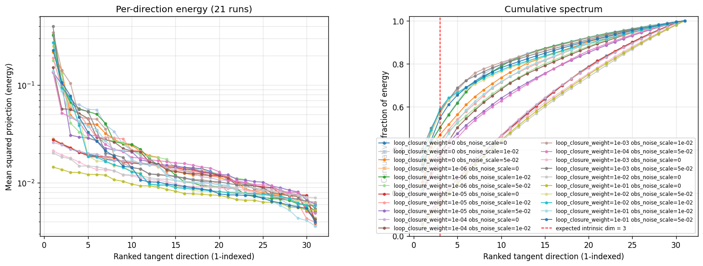
(to be written)
run_analytics stdoutrun_analyticsNo run_id provided — selecting best run from group 'wmtask_direct_sum_additive_splitmode_p30_perareaautodim__lc_x_obsnoisescale_sweep' ...
Found 21 total runs in JacobianODE/WMTask_identity_encoder_verification (group=wmtask_direct_sum_additive_splitmode_p30_perareaautodim__lc_x_obsnoisescale_sweep)
All runs (state, loop_closure_weight, tangent_entropy_weight, kl_dyn_weight):
t01qbk5m: state=finished, lc=0.0, te=0.0, kl_dyn=0.0
l0i0bzym: state=finished, lc=0.0, te=0.0, kl_dyn=0.0
r9mia371: state=finished, lc=0.0, te=0.0, kl_dyn=0.0
nrpapydb: state=finished, lc=1e-06, te=0.0, kl_dyn=0.0
g5airzvy: state=finished, lc=1e-06, te=0.0, kl_dyn=0.0
a8o57g8p: state=finished, lc=1e-06, te=0.0, kl_dyn=0.0
g0l7sjg7: state=finished, lc=1e-05, te=0.0, kl_dyn=0.0
612x132u: state=finished, lc=1e-05, te=0.0, kl_dyn=0.0
iu71o3mp: state=finished, lc=1e-05, te=0.0, kl_dyn=0.0
76h7kfc6: state=finished, lc=0.0001, te=0.0, kl_dyn=0.0
r3rlcdnf: state=finished, lc=0.0001, te=0.0, kl_dyn=0.0
bmlme6f2: state=finished, lc=0.001, te=0.0, kl_dyn=0.0
oji3a016: state=finished, lc=0.0001, te=0.0, kl_dyn=0.0
wo94ytuq: state=finished, lc=0.001, te=0.0, kl_dyn=0.0
61sz5up4: state=finished, lc=0.001, te=0.0, kl_dyn=0.0
8eiesjh9: state=finished, lc=0.01, te=0.0, kl_dyn=0.0
1hd13kml: state=finished, lc=0.1, te=0.0, kl_dyn=0.0
33amdeul: state=finished, lc=0.01, te=0.0, kl_dyn=0.0
wzabanh5: state=finished, lc=0.01, te=0.0, kl_dyn=0.0
yihsue9g: state=finished, lc=0.1, te=0.0, kl_dyn=0.0
tgw80il5: state=finished, lc=0.1, te=0.0, kl_dyn=0.0
slurm_timeout_min not found in any run config — falling back to 180 min
Including t01qbk5m (lc=0.0): use_all_runs=True (state=finished)
Including l0i0bzym (lc=0.0): use_all_runs=True (state=finished)
Including r9mia371 (lc=0.0): use_all_runs=True (state=finished)
Including nrpapydb (lc=1e-06): use_all_runs=True (state=finished)
Including g5airzvy (lc=1e-06): use_all_runs=True (state=finished)
Including a8o57g8p (lc=1e-06): use_all_runs=True (state=finished)
Including g0l7sjg7 (lc=1e-05): use_all_runs=True (state=finished)
Including 612x132u (lc=1e-05): use_all_runs=True (state=finished)
Including iu71o3mp (lc=1e-05): use_all_runs=True (state=finished)
Including 76h7kfc6 (lc=0.0001): use_all_runs=True (state=finished)
Including r3rlcdnf (lc=0.0001): use_all_runs=True (state=finished)
Including bmlme6f2 (lc=0.001): use_all_runs=True (state=finished)
Including oji3a016 (lc=0.0001): use_all_runs=True (state=finished)
Including wo94ytuq (lc=0.001): use_all_runs=True (state=finished)
Including 61sz5up4 (lc=0.001): use_all_runs=True (state=finished)
Including 8eiesjh9 (lc=0.01): use_all_runs=True (state=finished)
Including 1hd13kml (lc=0.1): use_all_runs=True (state=finished)
Including 33amdeul (lc=0.01): use_all_runs=True (state=finished)
Including wzabanh5 (lc=0.01): use_all_runs=True (state=finished)
Including yihsue9g (lc=0.1): use_all_runs=True (state=finished)
Including tgw80il5 (lc=0.1): use_all_runs=True (state=finished)
Found 21 effectively-done sweep runs:
loop_closure_weight=0.0, tangent_entropy_weight=0.0, kl_dyn_weight=0.0 -> run_id=l0i0bzym
loop_closure_weight=0.0, tangent_entropy_weight=0.0, kl_dyn_weight=0.0 -> run_id=r9mia371
loop_closure_weight=0.0, tangent_entropy_weight=0.0, kl_dyn_weight=0.0 -> run_id=t01qbk5m
loop_closure_weight=1e-06, tangent_entropy_weight=0.0, kl_dyn_weight=0.0 -> run_id=a8o57g8p
loop_closure_weight=1e-06, tangent_entropy_weight=0.0, kl_dyn_weight=0.0 -> run_id=g5airzvy
loop_closure_weight=1e-06, tangent_entropy_weight=0.0, kl_dyn_weight=0.0 -> run_id=nrpapydb
loop_closure_weight=1e-05, tangent_entropy_weight=0.0, kl_dyn_weight=0.0 -> run_id=612x132u
loop_closure_weight=1e-05, tangent_entropy_weight=0.0, kl_dyn_weight=0.0 -> run_id=g0l7sjg7
loop_closure_weight=1e-05, tangent_entropy_weight=0.0, kl_dyn_weight=0.0 -> run_id=iu71o3mp
loop_closure_weight=0.0001, tangent_entropy_weight=0.0, kl_dyn_weight=0.0 -> run_id=76h7kfc6
loop_closure_weight=0.0001, tangent_entropy_weight=0.0, kl_dyn_weight=0.0 -> run_id=oji3a016
loop_closure_weight=0.0001, tangent_entropy_weight=0.0, kl_dyn_weight=0.0 -> run_id=r3rlcdnf
loop_closure_weight=0.001, tangent_entropy_weight=0.0, kl_dyn_weight=0.0 -> run_id=61sz5up4
loop_closure_weight=0.001, tangent_entropy_weight=0.0, kl_dyn_weight=0.0 -> run_id=bmlme6f2
loop_closure_weight=0.001, tangent_entropy_weight=0.0, kl_dyn_weight=0.0 -> run_id=wo94ytuq
loop_closure_weight=0.01, tangent_entropy_weight=0.0, kl_dyn_weight=0.0 -> run_id=33amdeul
loop_closure_weight=0.01, tangent_entropy_weight=0.0, kl_dyn_weight=0.0 -> run_id=8eiesjh9
loop_closure_weight=0.01, tangent_entropy_weight=0.0, kl_dyn_weight=0.0 -> run_id=wzabanh5
loop_closure_weight=0.1, tangent_entropy_weight=0.0, kl_dyn_weight=0.0 -> run_id=1hd13kml
loop_closure_weight=0.1, tangent_entropy_weight=0.0, kl_dyn_weight=0.0 -> run_id=tgw80il5
loop_closure_weight=0.1, tangent_entropy_weight=0.0, kl_dyn_weight=0.0 -> run_id=yihsue9g
loaded wmtask RNN model checkpoint 41
Loading cached wmtask hiddens from /orcd/data/ekmiller/001/eisenaj/ControlJacobians/WMTaskModels/WMSelectionTask__cue_time_0.1__response_time_0.25__enforce_fixation_False/BiologicalRNN__cue_time_0.1__learning_rate_0.0005__max_epochs_42__N1_64__N2_64__tau_0.05__dt_0.02__eig_lower_bound_0.1__init_mode_random/_jacobianode_cache/hiddens__all__epoch41__trials4096__seed42.pt
n_dims=128, n_latent=128, n_dyn=31, dt=0.0200
run=l0i0bzym: DiagnosticMetrics(one_step_mase=0.7637654542922974, loop_closure_loss=53.11387634277344, fast_eigenvalue_fraction=0.0, trajectory_val_loss=0.03350723907351494) (from W&B history)
run=r9mia371: DiagnosticMetrics(one_step_mase=0.7422563433647156, loop_closure_loss=87.40425872802734, fast_eigenvalue_fraction=0.0, trajectory_val_loss=0.032444048672914505) (from W&B history)
run=t01qbk5m: DiagnosticMetrics(one_step_mase=0.7413040399551392, loop_closure_loss=18.907989501953125, fast_eigenvalue_fraction=0.0, trajectory_val_loss=0.03295352682471275) (from W&B history)
run=a8o57g8p: DiagnosticMetrics(one_step_mase=0.7372004985809326, loop_closure_loss=62.73476028442383, fast_eigenvalue_fraction=0.0, trajectory_val_loss=0.032315753400325775) (from W&B history)
run=g5airzvy: DiagnosticMetrics(one_step_mase=0.7724602222442627, loop_closure_loss=31.632299423217773, fast_eigenvalue_fraction=0.0, trajectory_val_loss=0.034192174673080444) (from W&B history)
run=nrpapydb: DiagnosticMetrics(one_step_mase=0.7413241863250732, loop_closure_loss=12.512887954711914, fast_eigenvalue_fraction=0.0, trajectory_val_loss=0.03295446187257767) (from W&B history)
run=612x132u: DiagnosticMetrics(one_step_mase=0.7404696941375732, loop_closure_loss=15.105483055114746, fast_eigenvalue_fraction=0.0, trajectory_val_loss=0.032601498067379) (from W&B history)
run=g0l7sjg7: DiagnosticMetrics(one_step_mase=0.7413851618766785, loop_closure_loss=4.94438362121582, fast_eigenvalue_fraction=0.0, trajectory_val_loss=0.03295626491308212) (from W&B history)
run=iu71o3mp: DiagnosticMetrics(one_step_mase=0.7359969019889832, loop_closure_loss=22.88654136657715, fast_eigenvalue_fraction=0.0, trajectory_val_loss=0.03239605948328972) (from W&B history)
run=76h7kfc6: DiagnosticMetrics(one_step_mase=0.7424413561820984, loop_closure_loss=1.0711948871612549, fast_eigenvalue_fraction=0.0, trajectory_val_loss=0.03306743502616882) (from W&B history)
run=oji3a016: DiagnosticMetrics(one_step_mase=0.7448838353157043, loop_closure_loss=3.5085091590881348, fast_eigenvalue_fraction=0.0, trajectory_val_loss=0.032615769654512405) (from W&B history)
run=r3rlcdnf: DiagnosticMetrics(one_step_mase=0.7411602735519409, loop_closure_loss=3.0362958908081055, fast_eigenvalue_fraction=0.0, trajectory_val_loss=0.032848335802555084) (from W&B history)
run=61sz5up4: DiagnosticMetrics(one_step_mase=0.7679632902145386, loop_closure_loss=0.8948383927345276, fast_eigenvalue_fraction=0.0, trajectory_val_loss=0.033639539033174515) (from W&B history)
run=bmlme6f2: DiagnosticMetrics(one_step_mase=0.7703580260276794, loop_closure_loss=0.6929311156272888, fast_eigenvalue_fraction=0.0, trajectory_val_loss=0.03413157910108566) (from W&B history)
run=wo94ytuq: DiagnosticMetrics(one_step_mase=0.723525881767273, loop_closure_loss=0.22593837976455688, fast_eigenvalue_fraction=0.0, trajectory_val_loss=0.032547008246183395) (from W&B history)
run=33amdeul: DiagnosticMetrics(one_step_mase=2.3761842250823975, loop_closure_loss=0.15168994665145874, fast_eigenvalue_fraction=0.0, trajectory_val_loss=0.27901938557624817) (from W&B history)
run=8eiesjh9: DiagnosticMetrics(one_step_mase=0.7394800186157227, loop_closure_loss=0.022406093776226044, fast_eigenvalue_fraction=0.0, trajectory_val_loss=0.03391609713435173) (from W&B history)
run=wzabanh5: DiagnosticMetrics(one_step_mase=2.3777201175689697, loop_closure_loss=0.08925589919090271, fast_eigenvalue_fraction=0.0, trajectory_val_loss=0.28017449378967285) (from W&B history)
run=1hd13kml: DiagnosticMetrics(one_step_mase=0.7410432696342468, loop_closure_loss=0.0037774527445435524, fast_eigenvalue_fraction=0.0, trajectory_val_loss=0.034271933138370514) (from W&B history)
run=tgw80il5: DiagnosticMetrics(one_step_mase=1.1909186840057373, loop_closure_loss=0.0030932382214814425, fast_eigenvalue_fraction=0.0, trajectory_val_loss=0.13789846003055573) (from W&B history)
run=yihsue9g: DiagnosticMetrics(one_step_mase=0.8642345070838928, loop_closure_loss=0.01568150520324707, fast_eigenvalue_fraction=0.0, trajectory_val_loss=0.03839172422885895) (from W&B history)
Ranking method: best_traj_loss
Best run ID: wo94ytuq
Best loop_closure_weight: 0.001
Best tangent_entropy_weight: 0.0
Best kl_dyn_weight: 0.0
Best traj loss: 0.032547
Criteria applied: ['C1', 'C2', 'C3']
Surviving: 10 / 21
Auto-selected run_id: wo94ytuq
======================================================================
PARETO FRONTIER RUNS (6 runs)
======================================================================
Run ID LC Loss Traj Val Loss
------------ -------------- --------------
tgw80il5 0.003093 0.137898
1hd13kml 0.003777 0.034272
8eiesjh9 0.022406 0.033916
wo94ytuq 0.225938 0.032547 <-- selected
iu71o3mp 22.886541 0.032396
a8o57g8p 62.734760 0.032316
======================================================================
RANKING METHOD COMPARISON (over 10 survivors)
======================================================================
Method Run ID LC Loss Traj Val Loss
---------------------- ------------ -------------- --------------
best_traj_loss wo94ytuq 0.225938 0.032547 <-- active
pareto_knee 8eiesjh9 0.022406 0.033916
geo_rank wo94ytuq 0.225938 0.032547
minimax_rank wo94ytuq 0.225938 0.032547
geo_log_score wo94ytuq 0.225938 0.032547
minimax_log_score 8eiesjh9 0.022406 0.033916
======================================================================
Loading run wo94ytuq from JacobianODE/WMTask_identity_encoder_verification ...
loaded wmtask RNN model checkpoint 41
Loading cached wmtask hiddens from /orcd/data/ekmiller/001/eisenaj/ControlJacobians/WMTaskModels/WMSelectionTask__cue_time_0.1__response_time_0.25__enforce_fixation_False/BiologicalRNN__cue_time_0.1__learning_rate_0.0005__max_epochs_42__N1_64__N2_64__tau_0.05__dt_0.02__eig_lower_bound_0.1__init_mode_random/_jacobianode_cache/hiddens__all__epoch41__trials4096__seed42.pt
Loading checkpoint epoch=42-step=5375.ckpt...
Train dataset shape: torch.Size([11468, 45, 128])
Validation dataset shape: torch.Size([3280, 45, 128])
Test dataset shape: torch.Size([1636, 45, 128])
Train trajectories dataset shape: torch.Size([2867, 49, 128])
Validation trajectories dataset shape: torch.Size([820, 49, 128])
Test trajectories dataset shape: torch.Size([409, 49, 128])
Loading checkpoint epoch=42-step=5375.ckpt...
Computing reconstruction ...
Computing MASE ...
Teacher-forced MASE: 0.7346
Free-running MASE: 0.8387
Computing latent utilization ...
Entropy-based utilization: 0.867
Null subspace mean RMS: 2.002815e-01
Computing Lyapunov exponents ...
Computing full-trajectory Lyapunov (409 test trajs, T=49) ...
Predicted Lyapunov exponents (batch+burn-in, 128 windowed trajs):
λ_1 = -0.0799 ± 0.1278
λ_2 = -0.5670 ± 0.2192
λ_3 = -0.7005 ± 0.2343
λ_4 = -0.9411 ± 0.3069
λ_5 = -1.7086 ± 0.4227
λ_6 = -2.0140 ± 0.5303
λ_7 = -2.7951 ± 0.2467
λ_8 = -2.9843 ± 0.2210
λ_9 = -4.3156 ± 0.4062
λ_10 = -4.8392 ± 0.1138
λ_11 = -4.9417 ± 0.1059
λ_12 = -5.0811 ± 0.0936
λ_13 = -5.1455 ± 0.0966
λ_14 = -5.2824 ± 0.1645
λ_15 = -5.4626 ± 0.1072
λ_16 = -5.5741 ± 0.1372
λ_17 = -5.6709 ± 0.1302
λ_18 = -5.7634 ± 0.1269
λ_19 = -5.9233 ± 0.1291
λ_20 = -6.1172 ± 0.1052
λ_21 = -6.2270 ± 0.1111
λ_22 = -6.3984 ± 0.1413
λ_23 = -6.6347 ± 0.0878
λ_24 = -6.9391 ± 0.1613
λ_25 = -7.1976 ± 0.0928
λ_26 = -7.5231 ± 0.1390
λ_27 = -8.0019 ± 0.2230
λ_28 = -8.2551 ± 0.1459
λ_29 = -8.4192 ± 0.1579
λ_30 = -9.1516 ± 0.1295
λ_31 = -9.4257 ± 0.0893
Predicted Lyapunov exponents (full-length, 409 test trajs):
λ_1 = -0.6689 ± 0.5724
λ_2 = -1.3059 ± 0.3812
λ_3 = -1.6814 ± 0.4349
λ_4 = -2.1997 ± 0.4943
λ_5 = -3.0652 ± 0.5359
λ_6 = -3.5715 ± 0.4142
λ_7 = -3.8820 ± 0.2953
λ_8 = -4.1818 ± 0.2975
λ_9 = -4.6917 ± 0.2519
λ_10 = -4.9384 ± 0.2212
λ_11 = -5.0661 ± 0.1973
λ_12 = -5.1775 ± 0.1892
λ_13 = -5.3428 ± 0.1538
λ_14 = -5.5658 ± 0.1643
λ_15 = -5.7852 ± 0.2226
λ_16 = -5.9553 ± 0.2345
λ_17 = -6.0773 ± 0.1741
λ_18 = -6.1984 ± 0.1568
λ_19 = -6.3190 ± 0.1698
λ_20 = -6.4191 ± 0.1551
λ_21 = -6.5718 ± 0.1743
λ_22 = -6.6670 ± 0.1868
λ_23 = -6.8255 ± 0.1636
λ_24 = -7.0091 ± 0.1622
λ_25 = -7.1371 ± 0.1654
λ_26 = -7.2742 ± 0.1647
λ_27 = -7.4379 ± 0.1923
λ_28 = -7.6459 ± 0.1338
λ_29 = -7.8753 ± 0.1986
λ_30 = -8.0599 ± 0.2371
λ_31 = -9.6461 ± 0.2229
Empirical Lyapunov exponents (mean ± std):
λ_1 = -0.6836 ± 0.4470
λ_2 = -1.2860 ± 0.4717
λ_3 = -1.8796 ± 0.4983
λ_4 = -2.5140 ± 0.3383
λ_5 = -2.9329 ± 0.4143
λ_6 = -3.2778 ± 0.5212
λ_7 = -3.7948 ± 0.4446
λ_8 = -4.2351 ± 0.4668
λ_9 = -4.6672 ± 0.4583
λ_10 = -5.0458 ± 0.4531
λ_11 = -5.3534 ± 0.4185
λ_12 = -5.7506 ± 0.4346
λ_13 = -6.2355 ± 0.3491
λ_14 = -6.7043 ± 0.5036
λ_15 = -7.0414 ± 0.4554
λ_16 = -7.3719 ± 0.4648
λ_17 = -7.6725 ± 0.4415
λ_18 = -7.9667 ± 0.4130
λ_19 = -8.2155 ± 0.4290
λ_20 = -8.4474 ± 0.4083
λ_21 = -8.6400 ± 0.3667
λ_22 = -8.8546 ± 0.3395
λ_23 = -9.0471 ± 0.3366
λ_24 = -9.3642 ± 0.2863
λ_25 = -9.5403 ± 0.3009
λ_26 = -9.7473 ± 0.3189
λ_27 = -9.9780 ± 0.3514
λ_28 = -10.2177 ± 0.4331
λ_29 = -10.4760 ± 0.4197
λ_30 = -10.6968 ± 0.4504
λ_31 = -11.0538 ± 0.5425
λ_32 = -11.3182 ± 0.5459
λ_33 = -11.7806 ± 0.6071
λ_34 = -12.3300 ± 0.5244
λ_35 = -12.6464 ± 0.5369
λ_36 = -13.0198 ± 0.6314
λ_37 = -13.3795 ± 0.7073
λ_38 = -13.7502 ± 0.7660
λ_39 = -14.0682 ± 0.7579
λ_40 = -14.3279 ± 0.7619
λ_41 = -14.6206 ± 0.8778
λ_42 = -15.0213 ± 0.8116
λ_43 = -15.3487 ± 0.8488
λ_44 = -15.7679 ± 0.8512
λ_45 = -16.3535 ± 0.8105
λ_46 = -17.2371 ± 0.8420
λ_47 = -18.0172 ± 0.6551
λ_48 = -18.7348 ± 0.4352
λ_49 = -19.1920 ± 0.4388
λ_50 = -19.6032 ± 0.3862
λ_51 = -19.9849 ± 0.4171
λ_52 = -20.2854 ± 0.3677
λ_53 = -20.7129 ± 0.4088
λ_54 = -21.2293 ± 0.4493
λ_55 = -22.1518 ± 0.3711
λ_56 = -22.5100 ± 0.3571
λ_57 = -22.8264 ± 0.3133
λ_58 = -23.1069 ± 0.3495
λ_59 = -23.3589 ± 0.3337
λ_60 = -23.6276 ± 0.2926
λ_61 = -23.8603 ± 0.3155
λ_62 = -24.0618 ± 0.3005
λ_63 = -24.2152 ± 0.3129
λ_64 = -24.3396 ± 0.3136
λ_65 = -24.4895 ± 0.3210
λ_66 = -24.6115 ± 0.3197
λ_67 = -24.7359 ± 0.3269
λ_68 = -24.8561 ± 0.3392
λ_69 = -24.9753 ± 0.3426
λ_70 = -25.1117 ± 0.3497
λ_71 = -25.2226 ± 0.3734
λ_72 = -25.3357 ± 0.4009
λ_73 = -25.4353 ± 0.4172
λ_74 = -25.5439 ± 0.4046
λ_75 = -25.6332 ± 0.4116
λ_76 = -25.7832 ± 0.4585
λ_77 = -25.9142 ± 0.4799
λ_78 = -26.0449 ± 0.4990
λ_79 = -26.1810 ± 0.5037
λ_80 = -26.3617 ± 0.4899
λ_81 = -26.5171 ± 0.4864
λ_82 = -26.6628 ± 0.4753
λ_83 = -26.8617 ± 0.4795
λ_84 = -27.0282 ± 0.5036
λ_85 = -27.2607 ± 0.4846
λ_86 = -27.4529 ± 0.4854
λ_87 = -27.5733 ± 0.4725
λ_88 = -27.7187 ± 0.4967
λ_89 = -27.8617 ± 0.5003
λ_90 = -27.9895 ± 0.4903
λ_91 = -28.1274 ± 0.4923
λ_92 = -28.2824 ± 0.4913
λ_93 = -28.4072 ± 0.4914
λ_94 = -28.5255 ± 0.4695
λ_95 = -28.6477 ± 0.4521
λ_96 = -28.7842 ± 0.4453
λ_97 = -28.9001 ± 0.4403
λ_98 = -29.0308 ± 0.4330
λ_99 = -29.1511 ± 0.4295
λ_100 = -29.2954 ± 0.4247
λ_101 = -29.4503 ± 0.4217
λ_102 = -29.5753 ± 0.4321
λ_103 = -29.6956 ± 0.4539
λ_104 = -29.8547 ± 0.4485
λ_105 = -29.9992 ± 0.4490
λ_106 = -30.1172 ± 0.4378
λ_107 = -30.2615 ± 0.4426
λ_108 = -30.4062 ± 0.3980
λ_109 = -30.5554 ± 0.4003
λ_110 = -30.7032 ± 0.3985
λ_111 = -30.8743 ± 0.4228
λ_112 = -31.0109 ± 0.4336
λ_113 = -31.1492 ± 0.4292
λ_114 = -31.3023 ± 0.3981
λ_115 = -31.4396 ± 0.4097
λ_116 = -31.5685 ± 0.3902
λ_117 = -31.7302 ± 0.3526
λ_118 = -31.8705 ± 0.3050
λ_119 = -31.9948 ± 0.3040
λ_120 = -32.0998 ± 0.2813
λ_121 = -32.2401 ± 0.2718
λ_122 = -32.3221 ± 0.2617
λ_123 = -32.4282 ± 0.2531
λ_124 = -32.5858 ± 0.2272
λ_125 = -32.8296 ± 0.2629
λ_126 = -33.0206 ± 0.2244
λ_127 = -33.2132 ± 0.2160
λ_128 = -33.4614 ± 0.3541
Mean KY dim (predicted): 0.176 ± 0.420
Mean KY dim (empirical): 0.042 ± 0.210
Mean KY dim (burn-in): 0.302 ± 0.526
Computing prediction windows ...
Windows: 3 — nMSE min=0.0487, median=0.2775, mean=0.2641, max=0.4661
Computing long-trajectory free-running rollouts ...
Computing encoder/decoder Jacobians ...
encoder_jacobian: (128, 128, 128)
decoder_jacobian: (128, 128, 128)
Computing amplification loss ...
Amplification loss — True state: 0.004748
Amplification loss — Latent: 0.005489
Computing tangent space spectrum ...